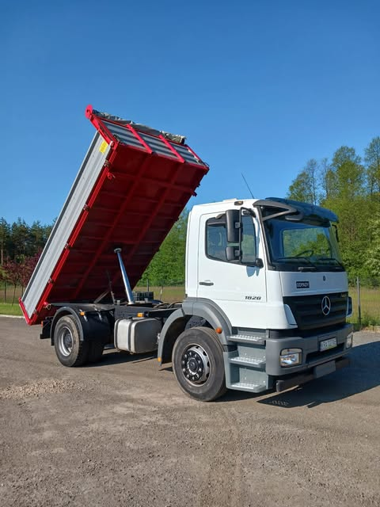
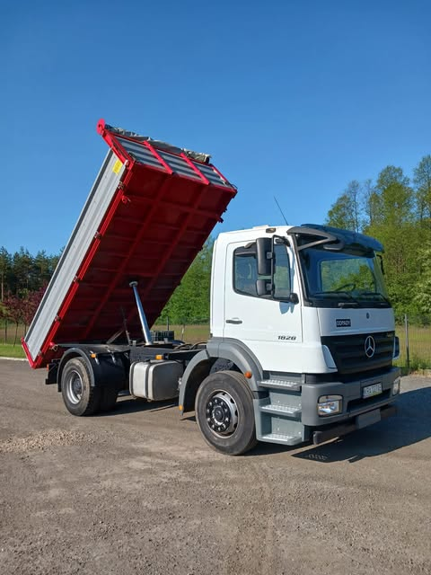
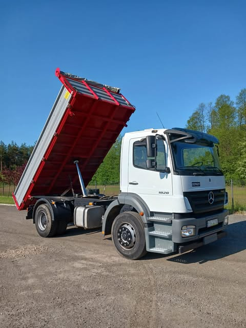

Nasze pojazdy
 

Szukasz niezawodnego transportu kruszywa, piasku, ziemi lub węgla?
Zaufaj sprawdzonej firmie i skorzystaj z usług naszej 2-osiowej wywrotki!

📞 Zadzwoń już teraz: 695 166 777
📍 Lokalizacja: Rybna i okolice woj , małopolskie